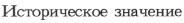
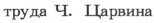
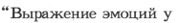
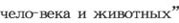
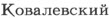
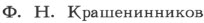
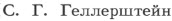
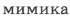

汉译者前言
·Preface to the Chinese Version·
达尔文的经典著作之一——《人类和动物的表情》（The Expression of the Emotion in Man and Animals ）在1872年出版。当时他已经63岁了。
这本书的内容丰富，描写细致；当时科学界人士都认为，达尔文对表情有特殊的观察力，叙述都很正确。
在达尔文自传里，有下面一段话：
“我的长子生于1839年12月27日；我马上开始记录他所表现的各种表情的开端，因为我相信，即使在这个早期，最复杂最细微的表情一定都有一个逐渐的和自然的起源。第二年，1840年夏季，我读到了贝尔（Bell）爵士论表情的名著；这就大大提高了我对于这个主题的兴趣，不过我不能完全同意他的主张，就是他以为各种肌肉是专门为了表情而产生出来的。从此以后，我就随时去进行关于人类和我们所家养的动物的表情这个主题的研究工作。我所著的这本书（《人类和动物的表情》）销行很广；在出版那一天，就销售了5267本”。
因此，我们可以知道，达尔文早在这本书出版以前33年，就开始对表情这个问题产生兴趣，进行研究、观察和收集资料的工作。这种长期不倦的研究精神，正也是值得作为我们学习的榜样的。
当然，从现代的观点看来，这本书的内容并不是十分完善的，而且存在着一些缺点；主要就在于达尔文当时还没有关于劳动创造人类的思想，因此他就把人类和动物的情绪有时混为一谈，模糊了双方的质的差异。不过，它的优点也不能抹杀，因为达尔文终究是第一个大胆采取了有机界的历史发展学说的唯物主义立场，来进行这个问题的研究的。
为了使我国读者更加清楚地理解这个著作的意义和优缺点，进一步明了苏联巴甫洛夫生理学派对于表情这个问题的研究情形，译者特地翻译了俄译本达尔文全集第5卷（1953年，苏联科学院出版社）里的一篇文章：《达尔文的著作〈人类和动物的表情〉的历史意义》（




）。除此以外，译者自感对这方面的知识不够，因此也参照了这个著作的俄译本（就是达尔文全集第5卷的下半部分），力求译文更加浅显，而容易使人理解。这个著作的俄译本，最初（也是在1872年）是由著名的俄国古生物学家兼达尔文主义者科瓦列夫斯基（В. О.

，1842—1883）所译出；后来又由俄国植物生理学家兼解剖学家克拉舍宁尼可夫（
，1869—1938）教授重译了一部分；而现在的俄译本则是苏联格列尔斯坦（
，1896—？）教授根据上述两个译本而重译的。虽然俄译本的文字译得很显明，但是我认为还有少数地方略有不符于原文，而且也有遗漏（例如第759页第21行和第785页第37行各漏译一句）和分段不符（例如第760页和第795页）等情况。这也说明达尔文的这个著作的翻译，确实不是轻而易举所能办到的事情。格列尔斯坦教授又在俄译本后面的附录里，著写了附注文字100多条，对这本书补充了很多新的观点和见解，并且作了个别的批评。译者也全部把它们译了出来。可是，这些附注的文字大都很长，甚至有些在千字以上，因此如果分别附印在正文的当页下面，就很难安排，因为原文里的著者附注和弗兰西斯·达尔文在第二版时候所增添的附注，已经有好几处多得难以容纳了，而且可能将来俄译者的附注再有修改和补充的地方（例如在现在的俄译者附注里，已经有2a，52a等几条补充附注），所以仍旧把它们附印在本书的后面；这些附注的号码，加用方括弧，例如［1］、［2］……以便和原注号码区分开来。
这本书的书名里的一个译名“表情”（Expression of emotions）也有译做“情绪表达”或者“面目表情”等，但是通常所谓面目表情（或者面部表情）的意义，偏于舞台上的表情，就是英名mimic（俄名

）；在这本书里所指的表情，则是种种情绪的表达，含有连动物也在内的各种表情动作、姿态和叫声等在内，所以要对它作广义的看法；译者为了简便和依从习惯起见，而把它译成了“表情”。1877年，达尔文在《精神》杂志（Mind ，哲学与心理学季刊）上，发表了一篇文章，叫做“一个婴孩的生活概述”（A Biographical Sketch of an Infant ）。因为这篇文章也是关于表情方面的，所以译者根据俄译文（达尔文全集，第5卷，第932—940页）译了出来；虽然一时没有找到原文对照，但是大约不会有太大的出入，因为据达尔文全集的编辑部说明，这篇文章的俄译文已经作了多次的重译。这篇文章的附注，也是苏联格列尔斯坦教授所写的。
最后，在这次翻译时间里，为了争取提早这本书的排印和出版时间，并且迎接达尔文诞生150周年纪念，因此译者一而再地尽力把交稿日期提前了两个多月；可是，也很可能由于匆忙而不免在翻译、抄写和校对等方面有疏忽和错误的地方，所以希望读者能够帮助指正，以便再版时修改。又在译稿的抄写和校对方面，承李慕兰同志全力协助，特此致谢！
译者写于1958年6月